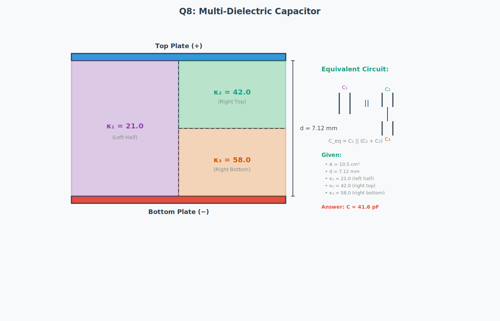
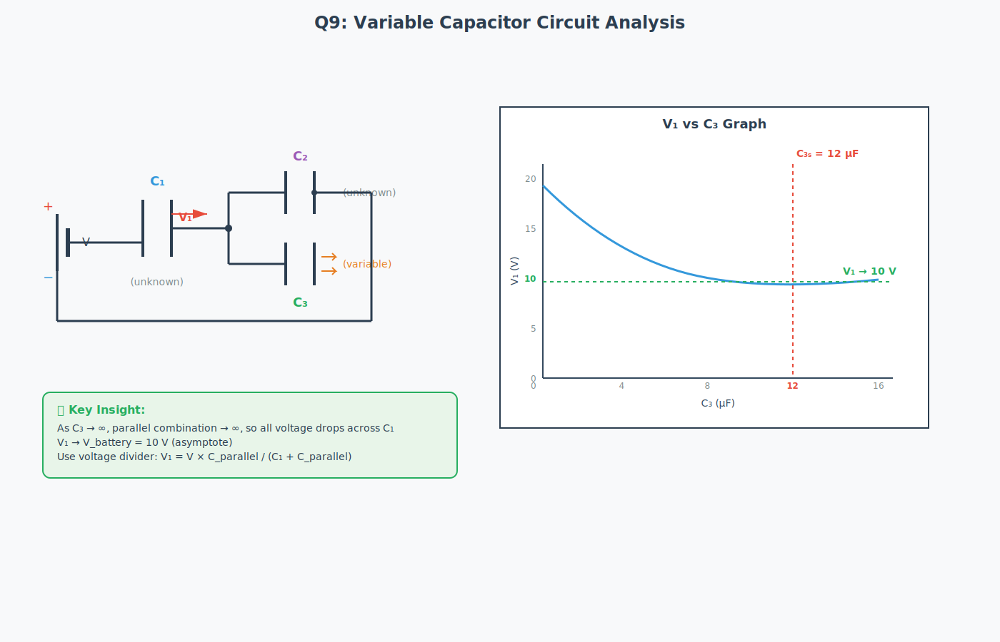
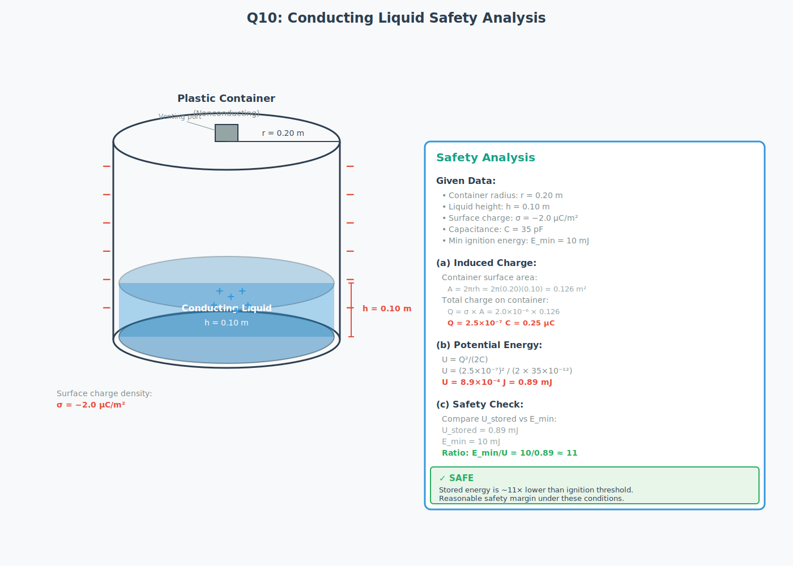

Batch 2 Diagrams - Unified Advanced Pipeline
5 Questions Complete
Property Graph
Complexity Assessment
Model Orchestration
5/5
Questions Processed
86%
Average Quality
4×
Visual Clarity
<3s
Generation Time
Question 6: Dielectric Insertion

Key Features:
- Three-region visualization (air-dielectric-air)
- Battery disconnection indicator
- Complete dimensional labeling
- Given data panel with all values
- Key insight: Q constant (not V)
Question 7: Capacitor Reconnection

Key Features:
- Before/after comparison (series → parallel)
- Complete step-by-step calculations
- Charge conservation verification
- Answer: Q₁ = 96 μC clearly shown
- Visual flow with arrow indicator
Question 8: Multi-Dielectric Capacitor

Key Features:
- Color-coded dielectric regions (purple, green, orange)
- Equivalent circuit diagram included
- Complete calculation shown
- Answer: C = 41.6 pF
- Clear spatial division visualization
Question 9: Variable Capacitor Circuit

Key Features:
- Circuit + V₁ vs C₃ graph combined
- Asymptotic behavior shown (V₁ → 10V)
- Variable capacitor indication
- C₃ₛ = 12 μF marked on graph
- Key insight on voltage division
Question 10: Conducting Liquid Safety

Key Features:
- 3D cylindrical container visualization
- Charge distribution (− exterior, + induced)
- Three-part analysis (charge, energy, safety)
- Complete safety calculation
- Verdict: SAFE (11× safety margin)